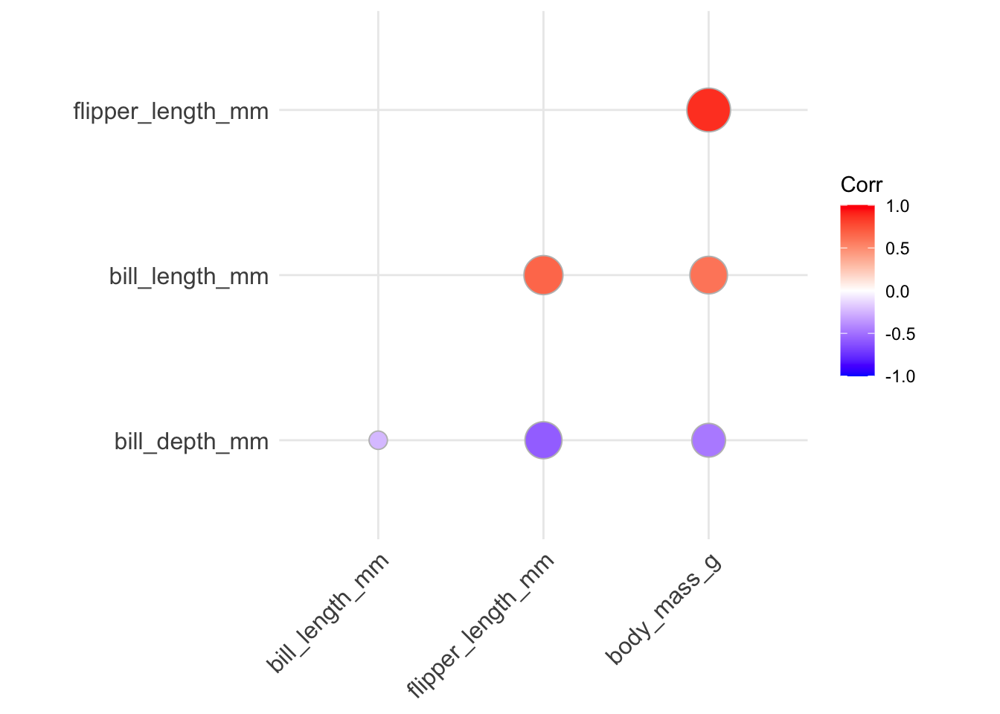

library(tidyverse)
lebron_shots <- read_csv("https://raw.githubusercontent.com/ryurko/DataViz-Class-Data/main/lebron_shots.csv")Demo 05: Contour Plots, Heat Maps, and Into High-Dimensional Data
Contour Plots and Heat Maps
The graphs below don’t have proper titles, axis labels, legends, etc. Please take care to do this on your own graphs.
For the first part of this demo we’ll use a dataset of shots by LeBron James. For people that are interested, this was constructed using the hoopR package.
You can read in the dataset with the following code:
2D Density Estimates
We’re all experts in 1D kernel density estimation by now. Let’s move on to 2D kernel density estimation.
Contour Plots – Geometry: geom_density2d
Here let’s focus on plotting the joint distribution of coordinate_x and coordinate_y, which are both quantitative (i.e., observing the joint distribution of shots). We’re already very familiar with how to make scatterplots:
lebron_shots |>
ggplot(aes(x = coordinate_x, y = coordinate_y)) +
geom_point(alpha = .5)It’s really easy to add a two-dimensional density (via contour lines) to the plot: we just use geom_density2d():
lebron_shots |>
ggplot(aes(x = coordinate_x, y = coordinate_y)) +
geom_point(alpha = .5) +
geom_density2d()
Similar to the contour lines on a topological map, the inner lines denote the “peaks” of the density. Note that the contour lines won’t necessarily encapsulate every data point.
We can also plot the contour lines without the points if you’d like (see below), but this is a bit misleading, because it automatically throws out areas of the plot where there were points but the density was low. To see this, compare the plot below to the plot above.
lebron_shots |>
ggplot(aes(x = coordinate_x, y = coordinate_y)) +
geom_density2d()Can Use stat_density2d to specify additional parameters
For example, we can change the fill type, which gives two benefits: (1) It looks cooler, and (2) Now we can see what the actual density values are.
lebron_shots |>
ggplot(aes(x = coordinate_x, y = coordinate_y)) +
stat_density2d(aes(fill = after_stat(level)), geom = "polygon") +
geom_point(alpha = .5) #+ #scale_fill_gradient(low = "darkblue", high = "darkorange")Note: To change the color, you can uncomment the code above. This uses the scale_fill_gradient() function, which we’ve seen before in previous homeworks.
We might also want to change the bandwidth. In 2D kernel density estimation, we must specify two bandwidths – one for the x-direction, one for the y-direction. We’ll see how to do this in homework.
Similarly, we can make heat maps!
Heat maps: Divide the space into a grid and color the grid according to high/low values.
To do this with densities, include fill = after_stat(density), geom = "tile", contour = FALSE in your call to stat_density2d, as below:
lebron_shots |>
ggplot(aes(x = coordinate_x, y = coordinate_y)) +
stat_density2d(aes(fill = after_stat(density)), geom = "tile",
contour = FALSE) +
geom_point(alpha = .5)Again, I recommend changing the default color scheme (it’s pretty awful…), as below:
lebron_shots |>
ggplot(aes(x = coordinate_x, y = coordinate_y)) +
stat_density2d(aes(fill = after_stat(density)), geom = "tile",
contour = FALSE) +
geom_point(alpha = .5) +
scale_fill_gradient(low = "white", high = "red")Hexagonal binning!
We make hexagonal heatmap plots using geom_hex(), can specify binwidth in both directions. This avoids limitations and issues with smoothing and challenges with multivariate density estimation. Note: You need to have the hexbin package installed prior to creating these visuals.
lebron_shots |>
ggplot(aes(x = coordinate_x, y = coordinate_y)) +
geom_hex() +
scale_fill_gradient(low = "darkblue", high = "darkorange") +
theme_bw()BONUS: Statistical summaries within hexagonal bins
Unrelated to 2D density estimation and viewing the joint frequency of points, we can alternatively view some statistical summary within various hexagonal bins displayed on two axes of interest. For example, the following graph displays the percentage of shots made within each hexagonal bin. We do this by mapping as.numeric(scoring_play) to the z aesthetic (since scoring_play is a boolean TRUE/FALSE and as.numeric() converts it to 1/0) and using the stat_summary_hex() layer with a specified function via fun = mean.
lebron_shots |>
ggplot(aes(x = coordinate_x, y = coordinate_y,
z = as.numeric(scoring_play))) +
stat_summary_hex(fun = mean) +
scale_fill_gradient(low = "darkblue", high = "darkorange") +
theme_bw()Into High-Dimensional Data
For the first part of this demo we’ll use the palmerpenguins dataset. To access the data, you will need to install the palmerpenguins package:
install.packages("palmerpenguins")We load the penguins data in the same way as the previous demos:
library(palmerpenguins)
data(penguins)
head(penguins)# A tibble: 6 × 8
species island bill_length_mm bill_depth_mm flipper_length_mm body_mass_g
<fct> <fct> <dbl> <dbl> <int> <int>
1 Adelie Torgersen 39.1 18.7 181 3750
2 Adelie Torgersen 39.5 17.4 186 3800
3 Adelie Torgersen 40.3 18 195 3250
4 Adelie Torgersen NA NA NA NA
5 Adelie Torgersen 36.7 19.3 193 3450
6 Adelie Torgersen 39.3 20.6 190 3650
# ℹ 2 more variables: sex <fct>, year <int>Correlograms with ggcorrplot
We can visualize the correlation matrix for the variables in a dataset using the ggcorrplot package. You need to install the package:
install.packages("ggcorrplot")Next, we’ll load the package and create a correlogram using only the continuous variables. To do this, we first need to compute the correlation matrix for these variables:
penguins_cor_matrix <- penguins |>
dplyr::select(bill_length_mm, bill_depth_mm, flipper_length_mm, body_mass_g) |>
cor(use = "complete.obs")
penguins_cor_matrix bill_length_mm bill_depth_mm flipper_length_mm body_mass_g
bill_length_mm 1.0000000 -0.2350529 0.6561813 0.5951098
bill_depth_mm -0.2350529 1.0000000 -0.5838512 -0.4719156
flipper_length_mm 0.6561813 -0.5838512 1.0000000 0.8712018
body_mass_g 0.5951098 -0.4719156 0.8712018 1.0000000NOTE: Since there are missing values in the penguins data we need to indicate in the cor() function how to handle missing values using the use argument. By default, the correlations are returned as NA, which is not what we want. Instead, we can change this to only use observations without NA values for the considered columns (see help(cor) for more options).
Now, we can create the correlogram using ggcorrplot() using this correlation matrix:
library(ggcorrplot)
ggcorrplot(penguins_cor_matrix)There are several ways we can improve this correlogram:
- we can avoid redundancy by only using one half of matrix by changing the
typeinput: the default isfull, we can make itlowerorupperinstead:
ggcorrplot(penguins_cor_matrix, type = "lower")- we can rearrange the variables using hierarchical clustering so that variables displaying stronger levels of correlation are closer together along the diagonal by setting
hc.order = TRUE:
ggcorrplot(penguins_cor_matrix, type = "lower", hc.order = TRUE)- if we want to add the correlation values directly to the plot, we can include those labels setting
lab = TRUE- but we should round the correlation values first using theround()function:
ggcorrplot(round(penguins_cor_matrix, digits = 4),
type = "lower", hc.order = TRUE, lab = TRUE)- if we want to place more stress on the correlation magnitude, we can change the
methodinput tocircleso that the size of the displayed circles is mapped to the absolute value of the correlation value:
ggcorrplot(penguins_cor_matrix, type = "lower", hc.order = TRUE,
method = "circle")
You can ignore the Warning message that is displayed - just from the differences in ggplot implementation.
Parallel coordinates plot with GGally
In a parallel coordinates plot, we create an axis for each varaible and align these axes side-by-side, drawing lines between observations from one axis to the next. This can be useful for visualizing structure among both the variables and observations in our dataset. These are useful when working with a moderate number of observations and variables - but can be overwhelming with too many.
We use the ggparcoord() function from the GGally package to make parallel coordinates plots:
library(GGally)Warning: package 'GGally' was built under R version 4.2.3Registered S3 method overwritten by 'GGally':
method from
+.gg ggplot2penguins |>
ggparcoord(columns = 3:6)There are several ways we can modify this parallel coordinates plot:
- we should always adjust the transparency of the lines using the
alphaLinesinput to help handle overlap:
penguins |>
ggparcoord(columns = 3:6, alphaLines = .2)- we can color each observation’s lines by a categorical variable, which can be useful for revealing group structure:
penguins |>
ggparcoord(columns = 3:6, alphaLines = .2, groupColumn = "species")
- we can change how the y-axis is constructed by modifying the
scaleinput, which by default isstdthat is simply subtracting the mean and dividing by the standard deviation. We could instead useuniminmaxso that minimum of the variable is zero and the maximum is one:
penguins |>
ggparcoord(columns = 3:6, alphaLines = .2, groupColumn = "species",
scale = "uniminmax")- we can also reorder the variables a number of different ways with the
orderinput (seehelp(ggparcoord)for details). There appears to be some weird errors however with the different options, but you can still manually provide the order of indices as follows:
penguins |>
ggparcoord(columns = 3:6, alphaLines = .2, groupColumn = "species",
order = c(6, 5, 3, 4))